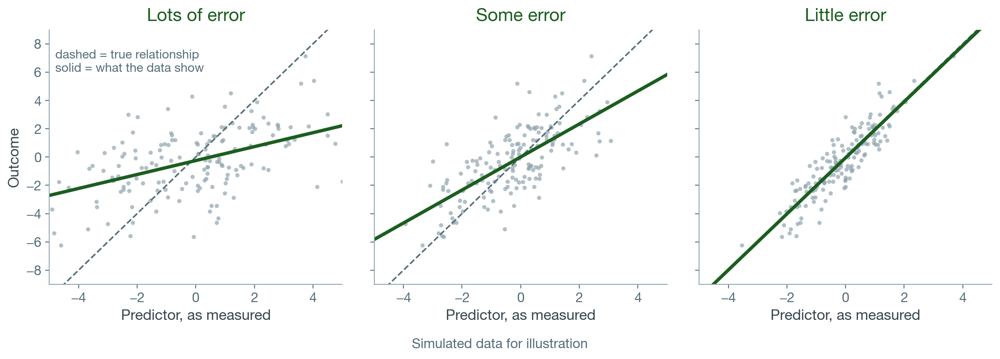

Three topics from earlier modules that the first data assignment showed could use more support.
1
Measurement error
2
R-squared and adjusted R-squared
3
Statistical significance and explanatory power
Every Score Has Some Error
Observed score = True score + Error
Take the same test twice and your score moves, even with no new learning.
Reliability is how consistent a measure is. Standardized tests report it in their technical documents.
This connects back to test scores in Module 3.
What Error Does to a Relationship

Error in a predictor makes the relationship look weaker than it is.
What to Do About It
Check the reliability of the measures you use.
Prefer standardized, validated tests.
A noisy measure (a school-made or subjectively graded assessment) does less harm as an outcome than as a predictor.
Error in an outcome
Mostly makes estimates less precise
Error in a predictor
Shrinks its coefficient toward zero
PlayPosit Question 1
A district uses a teacher-made writing rubric, scored inconsistently across teachers, to predict spring reading scores. What would you expect for the rubric’s coefficient?
Larger than the true relationship
Closer to zero than the true relationship
The same, because error averages out
Always negative
R-squared vs. Adjusted R-squared
From the first data assignment: adding school location to the model.
Model 2
Model 3 (adds school location)
R-squared
0.6573
0.6574
Adjusted R-squared
0.6572
0.6572
R-squared never goes down when you add predictors.
Adjusted R-squared subtracts a penalty for each one. It stayed flat, so school location added almost nothing.
To judge whether new predictors improved a model, look at adjusted R-squared.
Significant but Small
Same model, school location compared with city schools.
Difference in reading points
Statistically significant?
Town schools
+1.04
Yes (p < .001)
Rural schools
+1.11
Yes (p < .001)
R-squared
0.6573 → 0.6574
With about 12,000 children, even small differences are statistically significant.
Significance: the difference is unlikely to be zero. Explanatory power: how much it accounts for in the outcome.
PlayPosit Question 2
A statewide study of 2 million students finds students in later-starting schools score 0.4 points higher on a 500-point test (p < .001). Adding start time raises R-squared from 0.310 to 0.311. Which is the best reading?
Start time is a major driver of scores
The difference is statistically significant but small, and explains very little
It isn’t significant because R-squared barely changed
The sample is too big to trust
Hypothetical example.
Next: Grouped Data and Random Effects
The Module 5 lecture covers data that come in groups, like students within schools, and random effects.